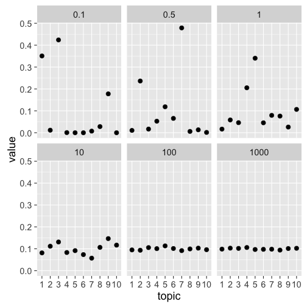

Topic modeling is a suite of algorithms that discover latent topics in large corpora of texts. To better understand what topic modeling does, I'll explain the conceptual background behind the algorithm(s). Topic modeling finds topics in a document that summarize the document in a "compressed" manner - as a weighted combination of topics. Simply put, it finds the the semantic gist of a document. For example, imagine a newspaper: Traditionally, the articles within one issue cover different topics, such as sports, economics and foreign relations. In a newspaper, these topics are usually given to us, by sections and heading. If the headings are not there, we can manually examine the articles to find out to which category they belong. Even if you have little knowledge of specific sports, you will still be able to recognize an article about the NFL as such. But now imagine that instead of one newspaper issue, you have millions - it is impossible to discover all topics by hand. This is where topic modeling comes in! It can automatically discover these topics for you, without the need to manually examine each and every article. But how does it do it?
In this blog post, I will focus on the most basic form of topic modeling, called Latent Dirichlet Allocation (LDA), first proposed by Blei, Ng, and Jordan (2003) (for an accessible review, see (Blei, 2012)). Multiple algorithms have been built on top of LDA now, extending it to various other uses. In LDA, each document is given a distribution over topics, such that some topics are more likely to be contained in a given document than others. Each document thus belongs to more than one topic, but to a different degree. In turn, each topic is represented by a distribution over terms (words), following the same principle. A document is composed of topics, and each topic is composed of terms.
To better understand this, let me explain how LDA thinks documents are generated. To generate a document, sample a topic distribution that represents the probability each topics appears in that document. For each word in the document, assign it a topic from that topic distribution, and then draw a term from the term distribution for that topic. Of course, in reality we do not write articles like that - but it works really well for the discovery of topics. In the next sections, I'll walk through these steps point by point and go into more detail on how these distributions are generated, including R code.
Topic Distributions
LDA uses a Dirichlet distribution to generate multinomial distributions over topics. A dirichlet distribtion is a distribution over distributions, that is, instead of a single value, you get back a whole distribution for each sample drawn. The Dirichlet distribution has a parameter \(\alpha\) that influences how this distribution sample looks like. For a practical example, imagine we want to generate a newspaper article, and want to assign it some topics. We can do this easily with this Dirichlet distribution in R, using the rdirichlet function in the MCMCpack package (other packages also provide this function). We will first set the \(\alpha\) parameter to .1, and then explore the effects of varying it a little later. We also have to specify how many topics we want - let's use 10 to not lose track. In application of LDA this tends to be much higher, depending on your data. The number of topics is denoted by \(K\). We only want one document for now, so we set \(N\)=1. When calling rdirichlet, you need to specify how many draws you want (here, \(N\)), and the \(\alpha\) parameter for each topic. Each topic here has the same \(\alpha\), although that could vary.
library(MCMCpack)
library(pander)
library(dplyr)
set.seed(2015) # for reproducibility
alpha = .1
N = 1
K = 10
x = rdirichlet(N, rep(alpha, K)) %>% as.numeric()
x
## [1] 3.701350e-12 2.868758e-05 1.328463e-08 4.964977e-03 6.993802e-02
## [6] 1.497147e-01 7.943219e-15 6.473852e-01 1.279675e-01 8.875518e-07
plot(x, ylab="Probability")
By visualizing the distribution, we can see that six values (topics) are close to zero - the document does not contain these. One topic, number 8, is however represented to a high degree. This is the main topic of the document, while others are represented to a smaller degree.
The \(\alpha\) parameters influences the shape of this distribution, more specifically, how many topics will have a (relatively) high value. In this example, it is fairly low, meaning that one topic has the majority of the probability. If we set the parameter, the distribution will be more even. We can illustrate this easily:
library(ggplot2)
alpha = c(0.1, 0.5, 1, 10, 100, 1000) # alphas to be tested
# get distribution for each apha
ds = lapply(alpha, function(a) rdirichlet(N, rep(a, K)))
# create a data frame for plotting
df = ds %>% unlist() %>%
as.data.frame() %>%
mutate(alpha = rep(alpha, each=K))
df$topic = as.factor(rep(c(1:K), length(alpha)))
names(df)[1] = "value"
df$alpha = as.character(df$alpha)
# plot the distributions, by alpha value
ggplot(df, aes(x=topic, y=value)) +
geom_point(size=3) +
facet_wrap(~alpha)

We can see that the higher the \(\alpha\) parameter, the more even the standard distribution. A value of 1000 would make very little sense for LDA - each topic is represented equally, resulting in an incoherent document. Rather, the value of \(\alpha\) is often fixed at either \(0.1\) or \(1/K\) to create distributions were some topics are highly probable. Some implementations also allow you to vary the parameter individually for each topic, although this is not as common.
We know now how can can generate a topic distribution for a document. We will follow a similar procedure for the word distributions. Remember, each of the ten topics has a term distribution associated with it. As this distribution is also sampled from a Dirichlet, the procedure will be very similar.
Term Distributions
Again, we have a parameter to be used with the Dirichlet distribution, this time we'll call it \(\beta\). This parameter will work in the same way as \(\alpha\) did for the topic distribution. Let's first create a sample corpus of terms we can use to create the distribution over. I used the rcorpora package, which comes with a list of words for different domains, such as birds, proverbs and political parties. We'll use Shakespeare words here.
library(rcorpora)
vocab = corpora("words/literature/shakespeare_words")$words
head(vocab) # some example words
## [1] "abstemious" "academe" "accommodation" "accused"
## [5] "addiction" "admirable"
length(vocab) # length of the vocabulary
## [1] 320
Now let's create a distribution over these words, as not all words are equally likely to pop up in each topic. Of course, this is just a toy example - our real vocabulary is not just restricted to these 320 words Shakespeare used. In LDA, this term distribution is typically denoted by \(\phi\).
sizeVocab = length(vocab)
beta = .1
phi = rdirichlet(K, rep(beta, sizeVocab))
# Plotting distribution for the first topic
plot(phi[1,] %>% as.numeric())
dim(phi)
## [1] 10 320
The plot shows the term distribution for the first topic: Again, we can see that some terms have a high probability of occurring, while the majority hover at the low values.
The dimensionality of phi show that for each of the 10 topics, we get one value for each of the 320 words. That means that each word has some probability of occurring in each topics, although often this probability is approximating zero.
Generating documents
Now that we know how these two distributions are used, we can generate documents from scratch. Of course, since our vocabulary is just a list of words, we will get incoherent documents back that are not particular insightful. But remember, this is just a toy model. When you use real data, the topics should be coherent.
Let's first set some additional parameters we need to generate these documents. First, we have to set the number of documents we want to generate. Let's choose \(N=5\). We also have to decide how long, that is, how many terms should be in each document. Let's set \(NumWords=20\). This is rather low number, but this way we can still analyze the documents by hand. Let's keep \(K=10\), and the parameters \(\alpha=50/K=5\) and \(\beta=.1\). We will use the vocabulary from Shakespeare from the above example.
N = 5
NumWords = 20
K = 10
alpha = 1/K
beta = .1
sizeVocab = length(vocab)
Once we've set all the parameters, let's create the two distributions, for topics \(\theta\) and terms \(\phi\) respectively.
theta = rdirichlet(N, rep(alpha, K))
dim(theta)
## [1] 5 10
phi = rdirichlet(K, rep(beta, sizeVocab))
dim(phi)
## [1] 10 320
Now remember, to generate a document, we first have to allocate topics to each word in each document. Then we have to sample a terms from that document, and concatenate those words to create the document. Let's do this step by step.
i = 1
topics = sample(1:K,
size = NumWords,
replace = TRUE,
prob = theta[i,])
topics
## [1] 5 5 5 5 5 5 5 5 7 5 5 5 5 5 5 5 7 5 5 5
Our first document (\(i=1\)) consists mainly of terms allocated to either topic number 5 or 7. By inspecting the \(theta\) distribution for that row, we can see that this reflects the distribution:
theta[1,] %>% plot()
Now that we have a topic, let's sample a word from the term distribution \(\phi\). We test this only for the first topic.
j = topics[1] # first topic
term = sample(vocab,
size = 1,
prob = phi[j,])
term
## [1] "enrapt"
Alright, we got our first term! To generate the whole document, we have to repeat the steps for each term-position in the document. To generate all documents, we have to do all these steps for all terms in each document. We could achieve this by writing a for-loop, but it's easier using lapply together with functions. Let's first wrap the commands for topic and term generation in functions.
# takes a document i and generates a topic distribution
generateTopics = function(i){
topics = sample(1:K,
size = NumWords,
replace = TRUE,
prob = theta[i,])
topics
}
# takes a topic j and samples a term from its term distribution
generateWord = function(j){
term = sample(vocab,
size = 1,
prob = phi[j,])
term
}
generateTopics(i)
## [1] 5 7 5 5 7 5 5 7 5 5 7 5 5 5 5 5 5 5 5 5
generateWord(j)
## [1] "spectacled"
Because we have to iterate over the topics generated by generateTopics, we'll write another function that will call generateWord on each topic. We can also implement a small command that will string together all the terms to make the output look a little nicer.
generateDocument = function(d){
topics = generateTopics(d) # d is the current document
terms = lapply(topics, generateWord) %>% unlist() # for each topic, generate a word
document = terms %>% paste(., collapse = " ") # string those together
document
}
documents = lapply(1:N, generateDocument)
documents %>% pander()
- housekeeping housekeeping new-fangled far-off gust to enmesh nimble-footed hob-nails belongings lonely far-off revolting far-off shooting star housekeeping perusal housekeeping money's worth bold-faced urging
- long-legged to besmirch to drug hunchbacked rumination to drug dishearten gnarled bottled excitement hoodwinked schoolboy tranquil schoolboy to dwindle schoolboy tardily mountaineer title page to lapse
- shooting star critical eyeball foppish posture gnarled foppish reprieve freezing to submerge enrapt apostrophe apostrophe day's work inauspicious savagery revolting long-legged to gossip to uncurl
- revolting fitful bump consanguineous to drug tardiness luggage to torture critic varied to submerge consanguineous critical unappeased to undress new-fallen perplex hobnob flawed deafening
- to negotiate stillborn engagement excitement to uncurl savage malignancy to swagger juiced courtship juiced overgrowth bandit money's worth posture to negotiate to humor malignancy shudder to forward
The documents were successfully generated based on the term and topic distribution. Of course, they're all nonsense. Neither our vocabulary or the bag-of-words assumption, where order doesn't matter, reflect reality. Nevertheless, this procedure is the underlying idea behind the success of LDA.
Inference
Alright, we generated some documents. But how does that help us in analyzing a corpus of text? In such a case, it's the reverse situation: We have our documents, but have no idea what the topic distribution \(\theta\) and the term distribution \(\phi\) is. This is where the real magic comes in. LDA can leverage this generative idea to infer the two distributions. Several implementations exist to do so, including variational inference and Gibbs sampling. Once the topic distributions and terms are inferred, it is possible to compare documents and topics to each other, as well as track changes over time. I might post another article in the near future on how this inference works in more detail - if you're interested, read the original Blei et al. paper, or this paper using Gibbs sampling (Griffiths and Steyvers, 2004).
Summary
The blog post focused on the generative nature of LDA. LDA uses several steps to generate documents:
- For each topic \(z\) (where \(z\) is from \(1\) to \(K\)) generate a multinomial term distribution \(\phi_z\) from a Dirichlet prior \(\beta\) to represent which terms are probable in which topics.
- For each document \(d\), draw a multinomial topic distribution \(\theta_d\) from a Dirichlet prior \(\alpha\) to represent which topics are probable in this document.
- For each word \(w_{di}\) in document \(d\):
- Draw a topic \(z_{di}\) from \(\theta_d\)
- Draw a word \(w_{di}\) from \(\phi_{z_{di}}\)
I hope the examples (although silly) helped explain the generative process underlying LDA, as well as the conceptual reasoning behind it. While the generative process does not actually work well to generate documents, the assumptions produce great results by inferring the posterior distributions \(\theta\) and \(\phi\). It has been used in a wide range of applications such as in the digital humanities, for instance, in analyzing classical scholarship (Mimno, 2012), and scientometrics, for instance, tracing the history of topics in computer science (Hall, Jurafsky, and Manning, 2008). If you are interested in applying LDA to one of your own data sets, check out the topicmodels package in R (Grün and Hornik, 2011). It's fairly straightforward to use, so check out the paper and the vignettes! If you can wait, I'm planning on writing another blog post on running LDA and some ways to analyze the results shortly.
References
[1] D. M. Blei. "Probabilistic topic models". In: Communications of the ACM 55.4 (Apr. 2012), p. 77. DOI: 10.1145/2133806.2133826. URL: http://dx.doi.org/10.1145/2133806.2133826.
[2] D. Blei, A. Ng and M. Jordan. "Latent Dirichlet Allocation". In: Journal of Machine Learning Research (2003).
[3] T. L. Griffiths and M. Steyvers. "Finding scientific topics". In: Proceedings of the National Academy of Sciences 101.Supplement 1 (Feb. 2004), pp. 5228-5235. DOI: 10.1073/pnas.0307752101. URL: http://dx.doi.org/10.1073/pnas.0307752101.
[4] B. Grün and K. Hornik. " topicmodels : An R Package for Fitting Topic Models ". In: Journal of Statistical Software 40.13 (2011). DOI: 10.18637/jss.v040.i13. URL: http://dx.doi.org/10.18637/jss.v040.i13.
[5] D. Hall, D. Jurafsky and C. D. Manning. "Studying the history of ideas using topic models". In: Proceedings of the Conference on Empirical Methods in Natural Language Processing - EMNLP \textquotesingle08. Association for Computational Linguistics (ACL), 2008. DOI: 10.3115/1613715.1613763. URL: http://dx.doi.org/10.3115/1613715.1613763.
[6] D. Mimno. "Computational historiography". In: J. Comput. Cult. Herit. 5.1 (Apr. 2012), pp. 1-19. DOI: 10.1145/2160165.2160168. URL: http://dx.doi.org/10.1145/2160165.2160168.